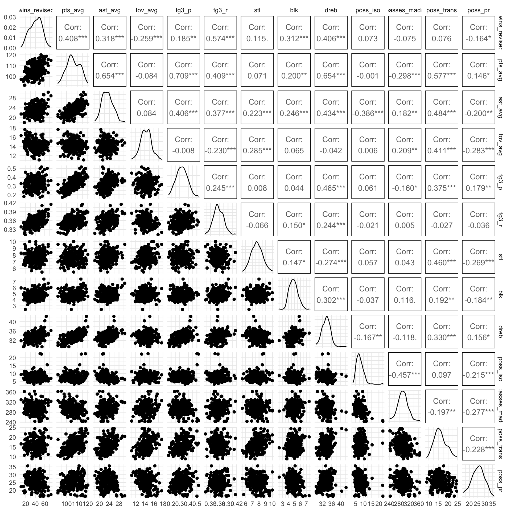
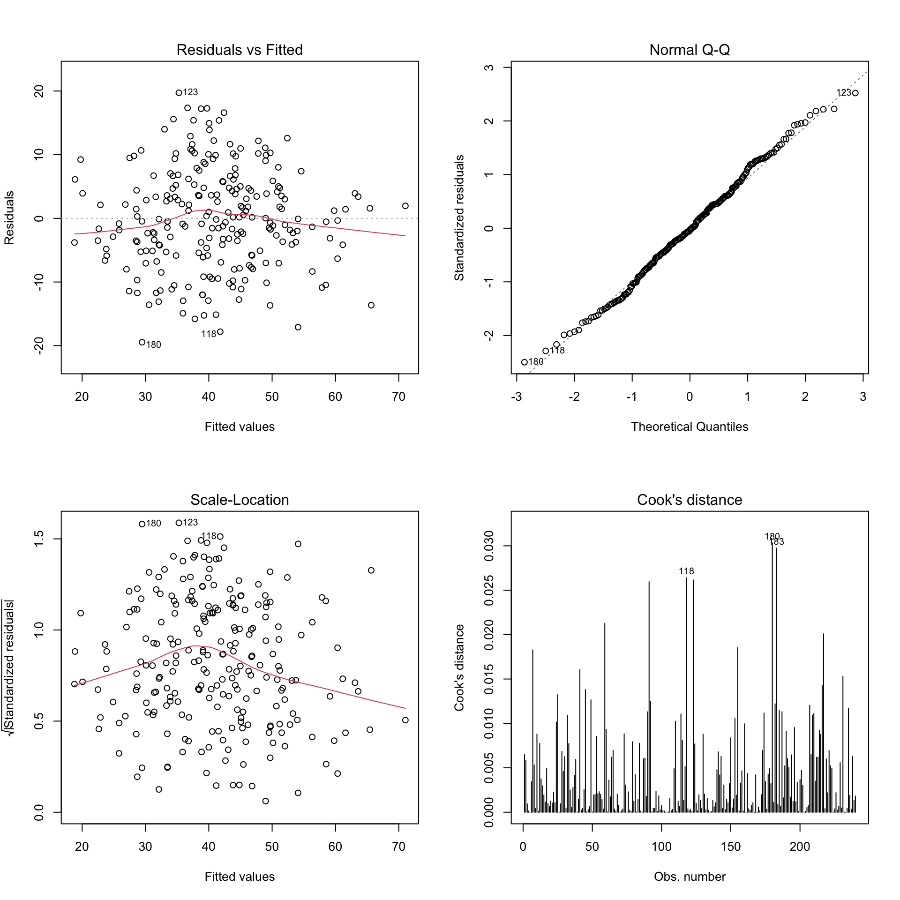

Predict Number of Winings
Regression Exploration
The resulting data frame of predict_df contains 240 observations and 20 variables. Each observations represent a team’s average data in one regular season. Dependent variable is the number of wins by team and season, denoted by wins_revised. Independent variables are selected from both offensive aspect and defensive part.
The typical attributes of “small ball era” is more three points shooting and quicker speed. So we select the following variables representing offensive level of a team: * fg3_p: proportion of three points shooting * fg3_r: three points shooting rate * pts_avg: average points per game * tov_avg: average number of turnovers per game * ast_avg: average number of assists per game * poss_trans: average number of transitions * passes_made: average number of passes per game * poss_iso: average number of isolations per game * poss_pr: average number of pick and rolls
As for the defensive level, variables include:
- stl: average steals per game
- blk: average blocks per game
- dreb: average defensive rebounds per game
Correlation Matrix
predict_df %>%
select(-fg3a_total, -fg3m_total, -play_off_team, -conf_rank) %>%
ggpairs(columns = 4:16)
The correlation between predictors are not very high, which is important for preventing collinearity.
We used backward elimination method to select the significant dependents.
Firstly, put all the potential variables into the linear model, to see the regression results
model1 = lm(data = predict_df, wins_revised ~ pts_avg + tov_avg + fg3_p + fg3_r + stl + blk + dreb + poss_trans + poss_iso + poss_pr + ast_avg + passes_made)
model1 %>% broom::tidy() %>% knitr::kable()| term | estimate | std.error | statistic | p.value |
|---|---|---|---|---|
| (Intercept) | -175.9904862 | 25.5821030 | -6.8794378 | 0.0000000 |
| pts_avg | 0.4248489 | 0.2300268 | 1.8469537 | 0.0660553 |
| tov_avg | -1.9412208 | 0.5782420 | -3.3571076 | 0.0009234 |
| fg3_p | -20.4273068 | 11.7774507 | -1.7344421 | 0.0841971 |
| fg3_r | 279.4294992 | 37.7656012 | 7.3990481 | 0.0000000 |
| stl | 5.8353408 | 0.8579365 | 6.8015999 | 0.0000000 |
| blk | 1.0691064 | 0.8141688 | 1.3131262 | 0.1904663 |
| dreb | 3.3156286 | 0.4585373 | 7.2308805 | 0.0000000 |
| poss_trans | -1.1801113 | 0.3087443 | -3.8222933 | 0.0001708 |
| poss_iso | 0.3654577 | 0.3299898 | 1.1074820 | 0.2692577 |
| poss_pr | -0.7894520 | 0.1874078 | -4.2124817 | 0.0000364 |
| ast_avg | -0.5135479 | 0.4708884 | -1.0905937 | 0.2766080 |
| passes_made | -0.0240122 | 0.0349037 | -0.6879561 | 0.4921828 |
The adjusted R square for the full model is 0.5767 that is to say 57.67% of variances in the response variable can be explained by the predictors.
Then, to get a better model with higher adjusted R square, we delete the less effective predictors with higher p-value, which is passes_made.
model2 = lm(data = predict_df, wins_revised ~ pts_avg + tov_avg + fg3_p + fg3_r + stl + blk + dreb + poss_trans + poss_iso + poss_pr + ast_avg)
model2 %>% broom::tidy() %>% knitr::kable()| term | estimate | std.error | statistic | p.value |
|---|---|---|---|---|
| (Intercept) | -185.2086957 | 21.7670062 | -8.508689 | 0.0000000 |
| pts_avg | 0.4602455 | 0.2239396 | 2.055222 | 0.0409972 |
| tov_avg | -2.0249356 | 0.5646398 | -3.586243 | 0.0004104 |
| fg3_p | -22.0534727 | 11.5244711 | -1.913621 | 0.0569209 |
| fg3_r | 278.0997445 | 37.6725137 | 7.382033 | 0.0000000 |
| stl | 5.8153684 | 0.8564542 | 6.790052 | 0.0000000 |
| blk | 1.0002139 | 0.8070530 | 1.239341 | 0.2164934 |
| dreb | 3.3142055 | 0.4580027 | 7.236214 | 0.0000000 |
| poss_trans | -1.1358662 | 0.3016225 | -3.765854 | 0.0002113 |
| poss_iso | 0.4524495 | 0.3044489 | 1.486126 | 0.1386271 |
| poss_pr | -0.7538689 | 0.1799207 | -4.190005 | 0.0000399 |
| ast_avg | -0.5648641 | 0.4644055 | -1.216317 | 0.2251221 |
The adjusted R square got improved to 0.5777. 57.77% of variances in the response variable can be explained by the predictors.
The result shows that assistance may not be a variable that significantly impacts the number of winings, so we decide to delete this variable from our model
model3 = lm(data = predict_df, wins_revised ~ pts_avg + tov_avg + fg3_p + fg3_r + stl + blk + dreb + poss_trans + poss_iso + poss_pr)
model3 %>% broom::tidy() %>% knitr::kable()| term | estimate | std.error | statistic | p.value |
|---|---|---|---|---|
| (Intercept) | -185.1802187 | 21.7897670 | -8.498495 | 0.0000000 |
| pts_avg | 0.3251935 | 0.1946784 | 1.670414 | 0.0962036 |
| tov_avg | -2.0555801 | 0.5646676 | -3.640337 | 0.0003366 |
| fg3_p | -22.3063836 | 11.5346505 | -1.933859 | 0.0543629 |
| fg3_r | 270.4523865 | 37.1830136 | 7.273547 | 0.0000000 |
| stl | 5.6946036 | 0.8515696 | 6.687185 | 0.0000000 |
| blk | 0.9850197 | 0.8078006 | 1.219385 | 0.2239526 |
| dreb | 3.3423210 | 0.4578976 | 7.299276 | 0.0000000 |
| poss_trans | -1.1493701 | 0.3017334 | -3.809223 | 0.0001791 |
| poss_iso | 0.6970955 | 0.2287848 | 3.046949 | 0.0025830 |
| poss_pr | -0.6435787 | 0.1555634 | -4.137083 | 0.0000494 |
The adjusted R square got decreased to 0.5768, but the difference is not significant. But consider the criteria of parsimony, we still exclude assistance from our model. In addition, block is also a variable that has a high p value. However, consider blocks is a important parameter in evaluating the defense level, it would be included in our model.
Cross Validation
With respect to the above three models, we want to see which model has the best generalizability. So in this part, cross validation is used to compare candidate model
set.seed(1000)
predict_cv_df =
predict_df %>%
crossv_mc(100) %>%
mutate(train = map(train, as.tibble),
test = map(test, as.tibble))
predict_cv_df =
predict_cv_df %>%
mutate(model1 = map(train, ~lm(wins_revised ~ pts_avg + ast_avg + tov_avg + fg3_p + fg3_r + stl + blk + dreb + poss_trans + passes_made + poss_iso + poss_pr, data = .x)),
model2 = map(train, ~lm(wins_revised ~ pts_avg + ast_avg + tov_avg + fg3_p + fg3_r + stl + blk + dreb + poss_trans + poss_iso + poss_pr, data = .x)),
model3 = map(train, ~lm(wins_revised ~ pts_avg + tov_avg + fg3_p + fg3_r + stl + blk + dreb + poss_trans + poss_iso + poss_pr, data = .x))) %>%
mutate(rmse1 = map2_dbl(model1, test, ~rmse(model = .x, data = .y)),
rmse2 = map2_dbl(model2, test, ~rmse(model = .x, data = .y)),
rmse3 = map2_dbl(model3, test, ~rmse(model = .x, data = .y)))
predict_cv_df %>%
select(starts_with("rmse")) %>%
pivot_longer(everything(),
names_to = "model",
names_prefix = "rmse",
values_to = "rmse") %>%
ggplot(aes(x = model, y = rmse, fill = model)) +
geom_boxplot(alpha = .6) The resulted rmse distribution of the three model are very similar to each other, which indicates similar level of generalizability. Therefore, we still use the model3 for the final model.
The resulted rmse distribution of the three model are very similar to each other, which indicates similar level of generalizability. Therefore, we still use the model3 for the final model.
Final MLR
As stated above, we decide to use Model 3 for predicting number of winings in NBA regular seasons:
Wins ~ pts_avg + tov_avg + fg3_p + fg3_r + stl + blk + dreb + poss_trans + poss_iso + poss_pr
Model Dignostics
We can see that Residuals vs Fitted is approximately normally distributed around 0. On the other hand, heteroscedasticity is not a problem in this model. And there is no out-lier that have big impact on the model fit.
par(mfrow=c(2,2))
plot(model2, which = 1)
plot(model2, which = 2)
plot(model2, which = 3)
plot(model2, which = 4)
Model Conclusion
All variables selected are significant in this linear regression model. Considering the unit of the predictors, it’s not easy for some variables to get improved a lot. Instead, just normal fluctuation of tov_avg, fg3_r, and dreb could influence the results.
For each 1 additional average turnover, there will be 2 extra lose, which hurts badly. For each 1% additional increase in three points shooting rate, there will be 2.7 extra wins, which helps the team a lot. For each 1 additional average defensive rebound, there will be 3.34 extra wins! Protecting the defensive rebound well is critical.